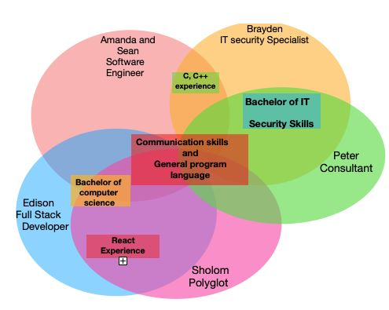

| Group Member | Ideal Job | Generic required skills that don't overlap |
|---|---|---|
| Amanda and Sean | Software Engineer | App development experience, 3D design knowledge and extensive design skills. |
| Sholom | Senior Engineer, Polyglot | Extensive knowledge of different program languages. |
| Peter | Consultant | System management skills and a knowledge of virtualization and the cloud. |
| Brayden | IT security Specialist | Broad range of IT security and problem solving skills. |
| Edison | Full stack developer | VCS skills and web design ability |
When comparing and contrasting the different ideal jobs within the group, the main things to examine are the skills, qualifications and experience required to get into these fields for each individual. The different ideal jobs for the group include; software engineer, senior engineer, consultant, IT security specialist and full stack developer. Figure 1 displays the common elements which are the overlapping skills and qualifications required for each job. Figure 2 displays what differentiates each job, which are the non overlapping required skills and experience. When examining the common elements for these jobs the most common were good communication skills and general program language knowledge (shown in figure 1). As each of these jobs will include working as a team or talking to clients, good communication skills (verbal or written) are essential to deliver and understand information efficiently and accurately. Each of these jobs will also come across programming (some more then others) making it a common element within the ideal jobs. Although these jobs have some broader common elements there are also key aspects that differentiate the positions. Software engineers, senior engineers and full stack developers are different from the other jobs because they require design skills. The consultant and IT security specialist jobs are different because they require system management and problem solving skills. IT security specialist is different from the rest of the jobs because it requires a knowledge of IT security skills. Consultant is different from the other jobs because it requires knowledge of virtualization and the cloud. Amanda, Sean and Sholom all have similar career plans as there are all heading towards a software engineer career. However the rest of the group differs, each heading into their own career paths.